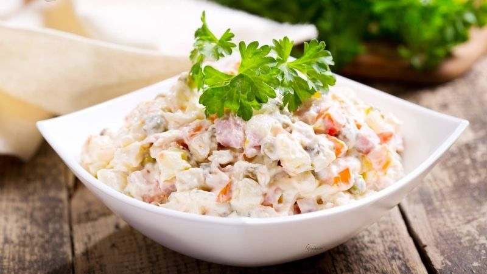
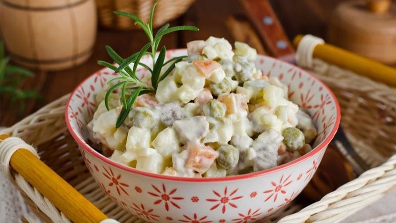

2 cách làm salad Nga ngon đúng chuẩn như ngoài hàng
Salad Nga món ăn đặc biệt thích hợp cho ngày hè, giúp giải nhiệt ngay lập tức. Dưới đây là 3 cách làm salad Nga ngon đúng chuẩn như ngoài hàng, cùng vào bếp và chế biến món ngon này.
- Salad Nga củ quả
- Salad Nga trộn với táo
- Salad Nga với sốt Kewpie
Salad Nga
là món ăn
khai vị thanh đạm
được làm từ rau củ tươi, đây là món ăn với cách làm đơn giản nhưng ngon và kích thích vị giác, giúp giữ gìn vóc dáng, cải thiện sắc tố làn da đặc biệt rất thích hợp với chị em phụ nữ.
1. Salad Nga củ quả

Nguyên liệu làm salad Nga củ quả
- 100gr cà rốt
- 200gr khoai tây
- 50gr bắp mỹ
- 200gr lê
- 200gr xúc xích hun khói
- 100gr đậu hà lan
- 2 quả trứng gà luộc
- Sốt mayonnaise
2. Salad Nga trộn với táo

Nguyên liệu làm salad Nga trộn với táo
- 2 quả táo xanh (nên chọn quả hơi chua)
- 1 củ khoai tây
- 1 củ cà rốt
- 100gr đậu Hà Lan đông lạnh
- 100gr hạt bắp
- 1 miếng ức gà
- 1 quả trứng gà
- Gia vị: đường, muối, sốt mayonnaise